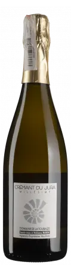
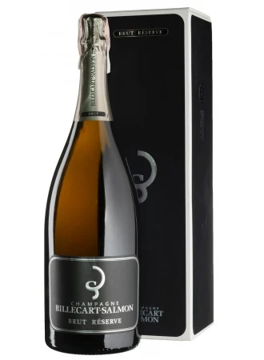
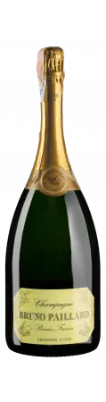
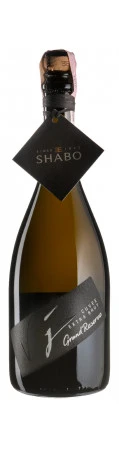
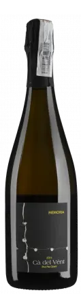
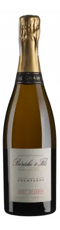
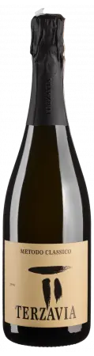

Classy Bubbles: Taste the Yeast
Everything needs to change for everything to stay the same.
Alice Paillard
What is the best way to celebrate winter holidays? Someone’s birthday? LotR anniversary? A mere existence? Morning? Of course, the answer is sparkling wine! So we need no reason to gather for a blind tasting of 7 traditional sparkling wines!
- Domaine de la Touraize Crémant du Jura Millésimé 2018
- Billecart Salmon Brut Reserve NV (magnum)
- Bruno Paillard Première Cuvée NV (magnum)
- Shabo Grand Reserve Extra Brut
- Cà del Vént Memoria Brut Pas Operé VSQ 2014
- Bérêche & Fils Brut Réserve NV
- Marco de Bartoli Terzavia 2018
Result
| amean | rms | sdev | price | QPR | |
|---|---|---|---|---|---|
| 1 | 3.61 | 3.64 | 0.1655 | 961.00 | 1.4209 |
| 2 | 3.48 | 3.56 | 0.5417 | 2050.00 | 0.5508 |
| 3 | 3.51 | 3.59 | 0.5598 | 1825.00 | 0.6501 |
| 4 | 3.16 | 3.23 | 0.4239 | 516.00 | 1.4296 |
| 5 | 3.87 | 3.91 | 0.2620 | 1650.00 | 1.2007 |
| 6 | 3.70 | 3.76 | 0.4240 | 1837.00 | 0.8400 |
| 7 | 3.64 | 3.69 | 0.4223 | 1085.00 | 1.2974 |
How to read this table:
ameanis arithmetic mean (and not ‘amen’), calculated as sum of all scores divided by count of scores for particular wine. It is more useful thantotal, because some wines are not tasted by all participants.rmsis root mean square or quadratic mean. The problem with arithmetic mean is that it is very sensitive to deviations and extreme values in data sets, meaning that even single 5 or 1 might ‘drastically’ affect the score. Without deeper explanation, RMS is picked because it is bigger than or equal to average, because it basically includes standard deviation.sdevis standard deviation. The bigger this value the more controversial the wine is, meaning that people have different opinions on this one.priceis wine price in UAH.QPRis quality price ratio, calculated in as100 * factorial(rms)/price. The reason behind this totally unprofessional formula is simple. At some point you have to pay more and more to get a little fraction of satisfaction. Factorial used in this formula rewards scores close to the upper bound 120 times more than scores close to the lower bound.
Wine
Domaine de la Touraize Crémant du Jura Millésimé 2018

- producer
- Domaine de la Touraize
- name
- Crémant du Jura Millésimé
- dosage
- Extra Brut
- vintage
- 2018
- degorgee
- 05/09/2020
- sur lie
- 18 months
- grapes
- Chardonnay
- appellation
- Crémant du Jura AOC
- alcohol
- 12.5%
- sugar
- 0.0g
- price
- 961 UAH
- buy
- goodwine.com.ua
Billecart Salmon Brut Reserve NV

- producer
- Billecart Salmon
- name
- Brut Reserve
- dosage
- Brut
- vintage
- NV
- degorgee
- ???
- sur lie
- ???
- grapes
- Pinot Meunier, Chardonnay, Pinot Noir
- appellation
- Champagne AOC
- alcohol
- 12.0%
- sugar
- 6.0g
- price
- 4100 UAH (2050 UAH) - NA
- buy
- goodwine.com.ua
Bruno Paillard Première Cuvée NV

- producer
- Bruno Paillard
- name
- Première Cuvée
- dosage
- Extra Brut
- vintage
- NV
- degorgee
- November 2020
- sur lie
- 36 months
- grapes
- Pinot Meunier, Chardonnay, Pinot Noir
- appellation
- Champagne AOC
- alcohol
- 12.0%
- sugar
- 7.6g
- price
- 3650 UAH (1825 UAH) - NA
- buy
- goodwine.com.ua
Shabo Grand Reserve Extra Brut NV

- producer
- Shabo
- name
- Grand Reserve Extra Brut
- dosage
- Extra Brut
- vintage
- NV
- degorgee
- ???
- sur lie
- 36 months
- grapes
- Chardonnay, Pinot Noir
- region
- Odesa
- alcohol
- 12.0%
- sugar
- ???
- price
- 516 UAH
- buy
- goodwine.com.ua
https://goodwine.com.ua/shabo-grand-reserve-extra-brut-82070.html
Ca Del Vent Memoria Brut Pas Opere 2014

- producer
- Ca Del Vent
- name
- Memoria Brut Pas Opere
- dosage
- Brut
- vintage
- 2014
- degorgee
- ~2018-2019
- sur lie
- 44 months
- grapes
- Chardonnay, Pinot Noir
- appellation
- Vino
- region
- Lombardia
- alcohol
- 12.5%
- sugar
- 3
- price
- 1650 UAH
- buy
- goodwine.com.ua
Bereche et Fils Brut Reserve NV

- producer
- Bereche et Fils
- name
- Brut Reserve
- dosage
- Extra Brut
- vintage
- NV
- degorgee
- 06/2021
- sur lie
- 24 months
- grapes
- Pinot Meunier, Chardonnay, Pinot Noir
- appellation
- Champagne
- alcohol
- 12.5%
- sugar
- 6.0g
- price
- 1837 UAH - NA
- buy
- goodwine.com.ua
Marco De Bartoli Terzavia 2018

- producer
- Marco De Bartoli
- name
- Terzavia
- dosage
- Extra Brut
- vintage
- 2018
- degorgee
- 2021
- sur lie
- >18 months
- grapes
- Grillo
- appellation
- Sicilia DOC
- alcohol
- 11.0%
- sugar
- 3.0g
- price
- 1085 UAH
- buy
- goodwine.com.ua
Fun facts
You might not need it, but you might also enjoy it.
For quite a long time, bubbles in wine were considered a fault (of course, the devil had something to do with it). Little by little, the mystery was solved, and it turned out that responsibility for bubbles lies on yeast that eats sugar and… well, produces CO2 as a byproduct of this feast. Over the years (and especially during the last 150 years), people came up with many methods to produce sparkling wines - traditional, tank, transfer, ancestral, carbonation, etc. During this event, we are focused solely on the traditional method.
In short, the most critical aspect of the traditional method is that the transformation from a still to a sparkling wine occurs entirely inside the bottle. Basically, the still wine is bottled together with yeast and sugar or must to initiate the second fermentation. Then for some time (it can be as short as 9 months and as long as 120 months), the bottle rests while all the magic happens inside. Of course, at some point, the yeast eats all it can eat, produces all the CO2 it can produce, and dies eventually. It doesn’t take too much time, by the way. Usually, all the yeast cells die within the first month. So why do some maniacs hold the bottle for 10 years? Because ageing on lees (e.g. on the dead yeast cells) actually has its merits as it contributes towards complexity, elegance, nutty and toasty aromas, and creamy texture.
Once the winemaker decides it’s enough, the process of riddling and disgorgement begins. The goal is to get rid of dead yeast cells from the bottle. Clarification occurs by settling the bottle upside down, and the dead yeast cells collect in the neck of the bottle. Bottles are rotated. Previously it was done by hand, but now machines usually do this job. To remove sediment, the bottles are placed upside down into freezing liquid which causes the yeast bits to freeze in the neck of the bottle. The crown cap is then popped off momentarily allowing the frozen chunk of Lees to shoot out of the pressurized bottle.
Now… as a result of disgorgement, the bottle contains much less liquid than it should! To deal with the loss, a mixture of wine and sugar (can be zero sugar) is added to fill bottles, and then bottles are corked, wired and labelled.
That’s it!
Arguably, the traditional method is the most appreciated method for sparkling wine production in terms of quality. At the same time, it is also the most costly in terms of production. For obvious reasons, right?
Any examples of the traditional method? Of course, Champagne! But also, Cava (from a specific region in Spain), Franciacorta (from a specific region in Italy), Trento (from a specific region in Italy), Crémant (many of them, must have region designation) and many wines without a special name…
Yeast
Interestingly, for most of the history of wine, winemakers did not know the mechanism that somehow converted sugary grape juice into alcoholic wine. They usually described the fermentation process as boiling or seething. This view is preserved in the etymology of the word ‘yeast’ itself, which essentially means ‘to boil’.
In the 1880s, Louis Pasteur studied the fermentation process and the role of yeast. He was tasked by the French government to study what made some wines spoil. While he discovered the connection between microscopic yeast cells and the process of fermentation, the exact mechanism of how the yeast would accomplish this task was not discovered till the 20th century with Glycolysis.
Sweetness of Champagne
In Champagne, the sweetness comes from dosage (mixture of wine and sugar or grape must) or ‘liqueur d’expedition’ added at the end of the second fermentation after disgorging. Dosage is required not only because disgorging leaves too much empty space in the bottle, but also to lower the acidity level, which is so high that the wine is undrinkable.
Unlike still wines, sweetness levels in Champagne are quite different
- brut nature (zero dosage)): 0-3 g/L RS, no added sugar
- extra brut: 0-6 g/L RS
- brut: 0-12 g/L RS
- extra-dry: 12-17 g/L RS
- dry: 17-32 g/L RS
- demi-sec: 32-50 g/L RS
- doux: 50+ g/L RS
Styles of Champagne
- Blanc de Blancs. White wine made of 100% white grapes. Usually made of 100% Chardonnay. Typically have more Lemon and Apple-like fruit flavours.
- Blanc de Noirs. White wine made of 100% black grapes. Usually made of Pinot Noir and/or Pinot Meunier. Typically have more Strawberry and white Raspberry flavours.
- Rose. Blend of white with a teensy bit of red wine. Strawberry and Raspberry, tart with low tannin and very high acidity.
Price of Champagne
Why is Champagne so cheap? - asks Tyson Stelzer. I am definitely not bragging, but I totally agree with the accent in this question. Champagne maintains a pretty low price despite the situation this region is in right now. And the price is only going to grow, so today is a good day to buy Champagne and enjoy it casually.
It takes around 1.3 kilograms of grapes to produce a bottle of champagne, which roughly costs around €10. The average Champagne vineyard is now valued at more than €1.5 million per hectare, ranking Champagne as the highest-value appellation viticultural land on earth, 60 times the value of an average Bordeaux vineyard!
There are several reasons for this price. Firstly, the taxing system. I am not going to dive into details (as I am not proficient enough to make any judgements here), but it’s a fact that people struggle with the current taxing system. You not only have to pay production tax, but you also pay enormous inheritance tax. For example, De Sousa owns 11 hectares of almost exclusively Côtes des Blancs grand crus (estimated value is €3 million per hectare) to produce 100,000 bottles, and at any time holds 250,000 bottles in its cellar. This little family estate must be worth well more than €30 million. Nowadays it would take a lifetime to pay off the tax on such an inheritance. Why? Because France boasts one of the highest levels of inheritance tax in the world, and children are stung with 45% tax on assets worth more than €1.8 million. That’s why they say ’If the parents pass away and haven’t prepared for this, then the children say it’s a poisoned gift and they’re forced to sell the vineyards to big companies.
Second, the technology of Champagne production is complex, labour-intensive and time-consuming. You also have to stock your wines for around 4.5 years (many stocks for even more). This obviously adds to the price.
Then we have the climate change, devastating vintages (like 2017, 2016, 2011, 2010, 2003, 2001). And one of the solutions is changing the viticultural approach. Sustainable farming turns out to be a good solution for this region. But as a result, to survive and produce great wine, growers have to cut their production. For example, Larmandier limits his yields to 60-70hL per hectare as opposed to the common 100hL in the region.
In the midst of all this, Champagne remains the outright bargain of the luxury wine world, with prestige champagne ranking far and away as the most affordable and most accessible of all flagship global benchmark wines. In 1904, Moet & Chandon Carte Bleue sold for the same price as Chateau Latour, Chateau Margaux and Chateau Haut-Brion. Today, these iconic wines are 20 times the price. Champagne does not rank even once among the top 20 most expensive wines in the world.